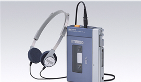

1946
동경통신공업주식회사(現 소니의 전신)은 19만엔의 자본금으로 통신 계측 연구에 필요한 장비를 갖추어 도쿄의 니혼바시에 설립
1950
일본 최초의 테이프 레코더 'G 형'의 제작 시작
1950
일본 최초의 트랜지스터 라디오 'TR-55' 출시
회사 제품에 SONY 로고사용 결정
1958
소니 주식 회사로 사명 변경
1960
세계 최초 직시형 포터블 트랜지스터 텔레비전 'TV8-301' 출시
1960
세계 최소·최경량 올 트랜지스터 텔레비전 'TV5-303' 출시
1960
세계 최초 트랜지스터 소형 VTR 'PV-100' 출시
1965
세계 최초 가정용 VTR 'CV-2000' 출시
1968
트리니트론 컬러 TV 'KV-1310' 출시
1970
소니 뉴욕 증권 거래소에 상장
1973
트리니트론 컬러 TV 시스템의 개발한 공로로 일본 기업 최초로 에미상 수상
1979
당시에는 혁신이었던 물건, 워크맨 등장
1979
3.5인치 플로피 디스크 개발
1979
세계 최초 컴팩트 디스크 플레이어 'CDP-101' 출시
1979
휴대용 CD 플레이어 'D-50'; 출시('Discman'이라 불림)
1992
'MZ-1'을 비롯한 미니디스크(MD) 시스템 4종 출시
1993
Sony Computer Entertainment 설립
1994
.jpeg)
Sony Computer Entertainment에서 Playstation (플레이스테이션) 출시
1996
가정용 퍼스널 컴퓨터 'VAIO (바이오)' 시리즈 출시
1997
평면 브라운관 탑재 'WEGA (베가)' 시리즈 출시
2003
세계 최초 'Blu-ray Disc (블루레이 디스크)' 레코더 BDZ-S77 출시
2004
.jpeg)
업계 최초로 디지털 시네마 프로젝터 세계 표준으로 DCI 추천 사양 4K (4096H × 2160V)를 만족하는 초고 해상도 프로젝터용 LCD 디바이스 '4K SXRD' 개발
2005

고화질 평면 TV의 새로운 브랜드 'BRAVIA' 발표
2007
세계 최초 OLED TV 'XEL-1' 출시
2013
High Resolution Audio 제품 공개 (HDD 오디오 플레이어 / 스테레오 및 DAC 앰프 / 헤드셋, 워크맨 등 포터블 오디오)
2018
아이보(aibo) 2세대 출시
2020
소니가 개발했던 센서들을 바탕으로 과학의 집합체인 전기차 프로토타입 VISION-S 공개